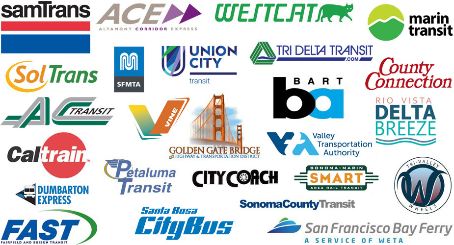

Regional Onboard Survey Program
Welcome to the web presence for the MTC Regional Onboard Survey Program. In 2010, MTC began Regional Onboard Survey Program, collecting data from transit operators on a rolling basis, surveying a few operators every year, with the goal of completing all operators within five to seven years. The first data collection survey cycle was completed in 2017, with a new cycle initiating thereafter.
The purpose of the survey is twofold: (1) to collect demographic and trip origin/destination data used to support future local and regional transportation planning efforts; and (2) to fulfill data collection requirements stipulated by Circular 4702.1B of the Title VI Requirements and Guidelines for Federal Transit Administration Recipients. MTC and operators coordinate to develop survey instruments that meet these two goals. To further these efforts, coordination requirements applicable to Bay Area transit rider surveys were adopted in July 2015 in MTC Resolution 3866, Revised.
Navigating through the tabs above, you should be able to find answers to many of your questions about this program, including those about survey scheduling, contracting, funding, types of questions asked of passengers, data releases for planning and research purposes, and related documentation and publications. Please report any questions and comments about this program or about these pages to Shimon Israel at SIsrael@mtc.ca.gov or 415-778-5239.
